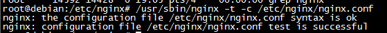

nginx的平滑重启
在研发过程中，修改nginx的配置文件nginx.conf是很平常的事，需要重启nginx。如果我们直接reload是有一定风险的，我们可以通过发送系统信号给nginx主进程的方式来进行。
第一步：确认nginx配置文件的语法是否正确，否则nginx将不会加载新的配置文件。

如果出现这样的信息说明配置文件是正确的。
第二步：平滑重启
kill -HUP nginx进程号
kill -HUP ''/var/run/nginx.pid"
当nginx接收到HUP信号时，它会尝试先解析配置文件（如果指定文件，就使用指定的，否则使用默认的），如果成功，就应用新的配置文件（例如：重新打开日志文件或监听的套接字），之后，nginx运行新的工作进程并从容关闭旧的工作进程，通知工作进程关闭监听套接字，但是继续为当前连接的客户提供服务，所有客户端的服务完成后，旧的工作进程就关闭，如果新的配置文件应用失败，nginx再继续使用早的配置进行工作。
补充内容：nginx的几种信号
TERM,INT 快速关闭
QUIT 从容关闭
HUP 平滑重启，重新加载配置文件
USR1 重新打开日志文件，在切割日志时用途较大
USR2 平滑升级可执行程序
WINCH 从容关闭工作进程